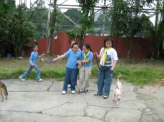
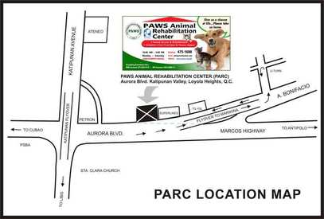

PAWS Animal Rehabilitation Center or PARC is the first real animal shelter in the country. It is PAWS’ most ambitious project to date and is now serving as a center for charitable veterinary services, catering to the pets of the low-income sector, providing temporary shelter to the countless number animals who are victims of cruelty and neglect.
In September 2000, PARC was put up through funding from the International Fund for Animal Welfare (IFAW) and the kind assistance of Don Manolo Lopez of MERALCO.
Larry Litchfield, an American architect and an animal lover, made the architectural design for free. With regard to the helpless situation of the animals here in the Philippines, Litchfield can only say, “It breaks my heart every time I see a kitten on the street.”
This same sentiment that he and PAWS volunteers share has encouraged the full realization of PARC.
Now, every year, with the help of dedicated staff and volunteers, The Philippine Animal Rehabilitation center (PARC) cares for over 500 rescued dogs and cats providing food, shelter, medical care, and as much love and attention as possible to the animals who come into its care…and through an aggressive campaign and adoption program, tries to find loving permanent homes for them.
All shelter animals are spayed & neutered before they are adopted out, making them healthier, better behaved and unable to contribute to the overpopulation of unwanted animals.
he shelter's clinic also offers low-cost spay and neuter services to the public, which directly impacts the number of animals that lose their lives in pounds and in the streets.
PARC is a perfect destination for field trips, where students are taught to love and care for animals through volunteering; be it feeding, walking or socializing dogs, or just petting and playing with the cats and kittens, it makes a lot of difference in the lives of shelter animals and the students alike.
Part of PAWS’ life-saving work at PARC is empowering people by providing volunteer opportunities to help animals so that everyone can do their own share in making the word a better place for all.
The PAWS Animal Shelter is located along Aurora Blvd at the boundary of Marikina and Quezon City. (PLEASE SEE MAP BELOW)
Aurora Blvd., Katipunan Valley, Loyola Heights Quezon City, Philippines
Telefax: 4751688
Office: Monday to Saturday -10:00AM - 5:00 PM
Clinic: Mon,Tue,Thu,Fri,Sat - 2:00PM - 4:00PM
Closed on Sundays & Holidays